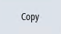
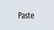
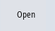

Use can use a copy of the sample file in order to make specific adjustments. Template files are available in the following directories:
/siemens/sinumerik/hmi/template/cfg and /siemens/sinumerik/hmi/template/lng
Save the sample file in the "user" or "oem" directory - in the appropriate folder.
|
Note
|
As soon as the file is in the user-specific directory, the entries of this file have priority over the Siemens file. If an entry is missing in a user-specific file, the corresponding entry from the Siemens file is used instead.
You need to restart the operating software for the settings made in the file to take effect.
|
Precondition
-
If you copy files, you require access level 1 (manufacturer).
-
When assigning a new file name, ensure that only files with a maximum name length of 49 characters can be managed.
Copying / pasting / opening a file
 | 1. | Select the "Start-up" operating area. |
 | 2. | Press the "System data" softkey. The data tree is displayed. |
| | 3. | For instance, on the NCU directory, "System CF card", under "siemens" open the required directory (e.g. /sinumerik/hmi/template/cfg). |
| | 4. | Position the cursor on the desired file. |
|  | 5. | Press the "Copy" softkey. |
| | 6. | For instance, on the NCU in the "System CF card" directory, under "oem" or "user" open the required directory (e.g. /sinumerik/hmi/cfg), in which the copied file should be saved. |
|  | 7. | Press the "Paste" softkey. If a file of the same name already exists, you receive a message. You can overwrite or rename the file. |
 | 8. | Press the "OK" softkey. |
|  | 9. | You can open the selected file in the editor by pressing the "Open" softkey. |
| | | - OR - |
 | | Press the <INPUT> key. |
| | | - OR - |
| | | Double-click the highlighted file. |
Rename file
| | 1. | Select the required file. |
 | 2. | Press the ">>" and "Properties" softkeys. The "Properties of..." window opens. The following data is displayed: Path: Name: Creation date and time: Date of change and time:
|
| | 3. | To change the file name, place the cursor in the "Name" entry field and overwrite the name. Date of change and time are simultaneously updated. |
| | 4. | Press the "OK" softkey to save the new name. |
Cut-out/delete file
| | 1. | Select the required file. |
| | 2. | Press the "Cut" softkey. The file is copied into the buffer and at the same time deleted from the previous directory. As the file is located in the buffer, you can also insert the file into another directory. |
| | | - OR - |
| | 2. | Press the ">>" and "Delete" softkeys. You receive an alarm and you can delete the file by pressing the "OK" softkey. Press the "Cancel" softkey to cancel the delete operation. |
Displaying the file in the preview window
| | 1. | Select the required file. |
| | 2. | Press the ">>" and "Preview window" softkeys. The preview window is displayed in the lower area of the window together with the file contents. |
| | | Press the "Preview window" softkey again to close the window. |